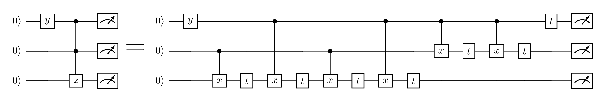
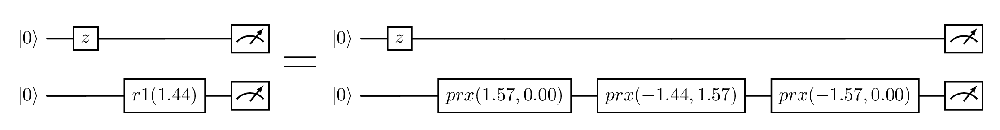
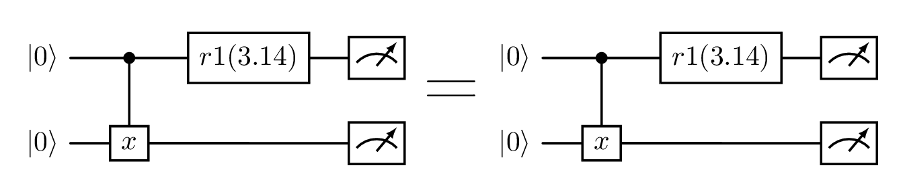
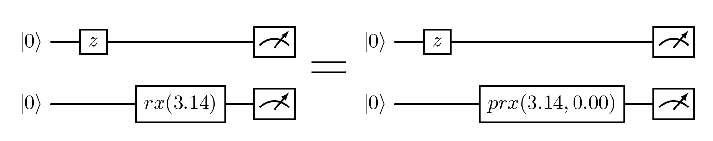
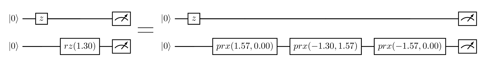
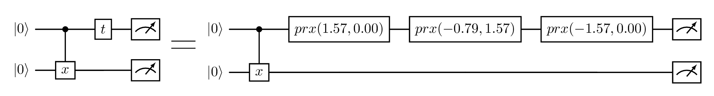
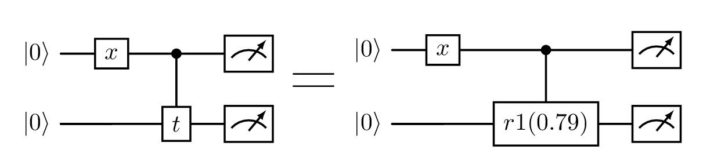
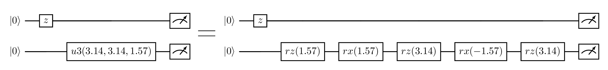
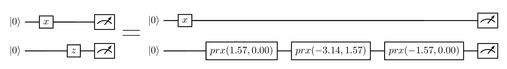

CudaQ Decomposition Patterns¶
CudaQ offers a set of decomposition passes used by the nvq++ quantum compiler. The passes can
be applied to a given quantum kernel as follows:
First, extract the MLIR context and define an MLIR PassManager as follows:
auto [mlirModule, contextPtr] = extractMLIRContext(quakeModule);
mlir::MLIRContext &context = *contextPtr;
// creating pass manager
mlir::PassManager pm(&context);
Next, define a DecompositionPassOptions object and pass to it a list with the decomposition passes
that you desire to apply. For instance, in the following example the decomposition pattern CXToCZ
is specified.
cudaq::opt::DecompositionPassOptions options;
options.enabledPatterns = {"CXToCZ"};
\note The enabledPatterns in the cudaq::opt::DecompositionPassOptions is a list. Thus, more than
one decomposition pattern can be applied using the same pass manager.
Next, add a cudaq::opt::createDecompositionPass to the pass manager. Do not forget to pass
options as input parameter of cudaq::opt::createDecompositionPass, as follows:
pm.addPass(cudaq::opt::createDecompositionPass(options));
Finally, you can dump and visualize the effects of the decomposition pattern on your MLIR module as follows:
// running the pass
if(mlir::failed(pm.run(mlirModule)))
std::runtime_error("The pass failed...");
// if pass is applied successfully ...
std::cout << "Circuit after pass:\n";
mlirModule->dump();
In the following, the list of all decomposition patterns offered by CudaQ are shown with a respective example.
CCX to CCZ¶
The pattern CCXToCCZ replaces all the two-controls X gates in a circuit by two-controls Z
gates.

CCZ to CX¶
The pattern CCZToCX replaces all the two-controls Z gates in a circuit by two-controls X
gates.

CH to CX¶
The pattern CHToCX replaces all the controlled Hadamard gates in a circuit by CNot gates.

CR1 to CX¶
The pattern CR1ToCX replaces all the controlled R1 gates in a circuit by CNot gates.

CRx to CX¶
The pattern CRxToCX replaces all the controlled RX gates in a circuit by CNot gates.

CRy to CX¶
The pattern CRyToCX replaces all the controlled RY gates in a circuit by CNot gates.

CRz to CX¶
The pattern CRzToCX replaces all the controlled RZ gates in a circuit by CNot gates.

CX to CZ¶
The pattern CXToCZ replaces all the CNot gates in a circuit by controlled Z gates.

CZ to CX¶
The pattern CZToCX replaces all the controlled Z gates in a circuit by CNot gates.

Exp Pauli Decomposition¶
The pattern ExpPauliDecomposition applies Pauli Decompositions.

H to PhasedRx¶
The pattern HToPhasedRx replaces all the Hadamard gates in a circuit by phased RX gates.

R1 to PhasedRx¶
The pattern R1ToPhasedRx replaces all the R1 gates in a circuit by phased RX gates.

R1 to Rz¶
The pattern R1ToRz replaces all the R1 gates in a circuit by RZ gates.

Rx to PhasedRx¶
The pattern RxToPhasedRx replaces all the RX gates in a circuit by phased RX gates.

Ry to PhasedRx¶
The pattern RyToPhasedRx replaces all the RY gates in a circuit by phased RX gates.

Rz to PhasedRx¶
The pattern RzToPhasedRx replaces all the RZ gates in a circuit by phased RX gates.

S to PhasedRx¶
The pattern SToPhasedRx replaces all the S gates in a circuit by phased RX gates.

S to R1¶
The pattern SToR1 replaces all the S gates in a circuit by R1 gates.

Swap to CX¶
The pattern SwapToCX replaces all the swap gates in a circuit by CNot gates.

T to PhasedRx¶
The pattern TToPhasedRx replaces all the T gates in a circuit by phased RX gates.

T to R1¶
The pattern TToR1 replaces all the T gates in a circuit by R1 gates.

U3 to Rotations¶
The pattern U3ToRotations replaces all the U3 gates in a circuit by rotation gates.

X to PhasedRx¶
The pattern XToPhasedRx replaces all the X gates in a circuit by phased RX gates.

Y to PhasedRx¶
The pattern YToPhasedRx replaces all the Y gates in a circuit by phased RX gates.

Z to PhasedRx¶
The pattern ZToPhasedRx replaces all the Z gates in a circuit by phased RX gates.
